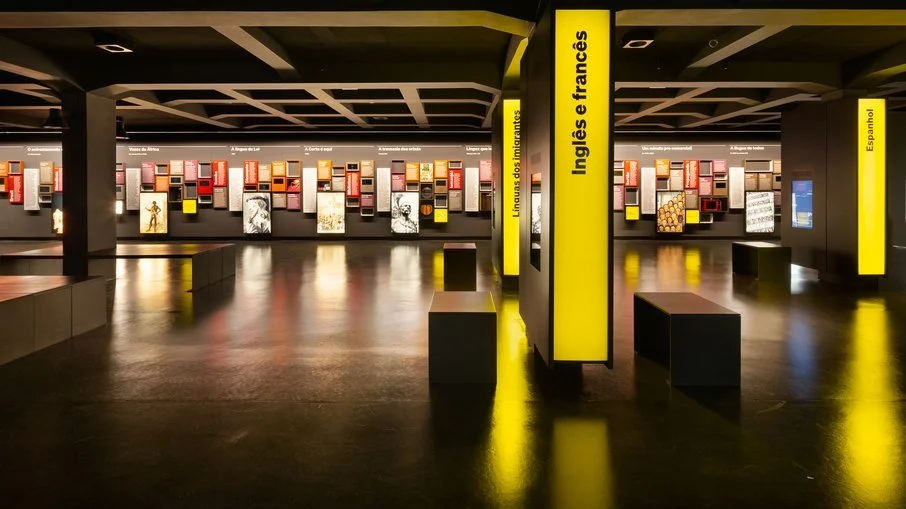
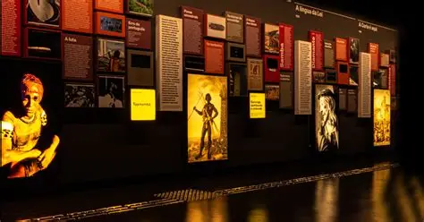
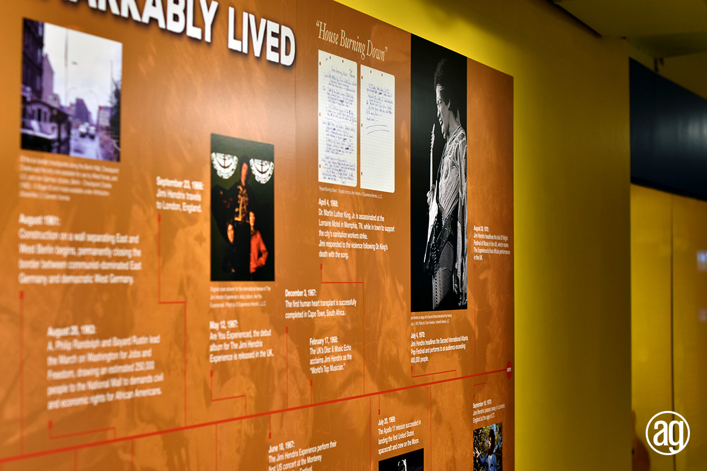

The “Languages of the World” exhibition explores the richness and diversity of human language across continents and cultures. Through interactive panels and audiovisual installations, visitors are invited to discover how languages shape identity, memory, and connection.

Portuguese is the central focus, but the exhibition highlights over 20 languages spoken around the globe, including English, Spanish, Yoruba, Japanese, and Indigenous Brazilian languages. Each totem offers insights into phonetics, writing systems, and cultural expressions tied to language.
